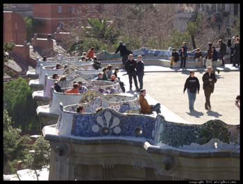
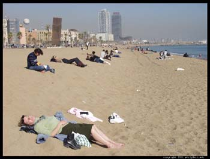

Španske slike, 2. deo
Malo o tranziciji
Španija je u toku šest decenija XX veka prošla neobično veliki put političkih promena od nestabilnog demokratskog poretka sa početka 30-ih godina, do građanskog rata, potom autoritarne represije, neizvesne tranzicije i najzad konsolidovane demokratije. Od Frankove smrti 1975. godine do sredine 80-ih godina, u političkom sistemu Španije desile su se dve bitne promene: jedna od autoritarnog poretka ka demokratskom, a druga od centralizovane države do zemlje sa izraženim regionalnim autonomijama u političkom, ekonomskom i kulturnom smislu. Paraleno sa ovime dešavale su se i impresivne socijalne promene, pa je zemlja prešla put od nerazvijene do ekonomski napredne, slično kao i druge države zapadne Evrope.
***
Malo o ekonomiji i medijima
Tokom Frankovog života mediji su, kao i u drugim autoritarnim sistemima, bili neslobodni i kontrolisani. Ipak, u poznoj fazi njegove vladavine, došlo je do izvesne liberalizacije. Jedan od razloga za to bila je ekonomija. Oko dva miliona Španaca koji su išli na privremeni rad u razvijene evropske zemlje i oko četrdeset miliona turista godišnje koji su dolazili u Španiju, povoljno su uticali na standard i na izloženost građana vrednostima drugačijim od onih koje su nametane u Frankovom režimu. Jedan od načina na koji je izvesna medijska liberalizacija sprovođena bile su međunarodne vesti. Kroz njih su mediji nastojali da Špance upoznaju sa načinima funkcionisanja demokratije i demokratskog sistema u zemljama kao što su Italija, Velika Brianija ili Francuska. Razvijenost ovih zemalja činila je da one budu pozitivni i rado prihvatani uzori.
Mislim da je u našim medijima, i nekad i sad, jedan od problema to što se međunarodne teme,
uključujući Evropsku uniju, prate vrlo površno, pa je kroz medije teško bilo šta stvarno
naučiti o funkcionisanju drugih zemalja.
***
Malo o društvu i životu uopšte
Pričale su mi neke Španjolke, koje su bile deca u drugoj polovini 70-ih i početkom 80-ih, odnosno nakon Frankove smrti, da su ih roditelji podsticali na slobodu u izražavanju i ponašanju, da je bilo veselo i opušteno, upravo zato što su oni kao deca i mladi ljudi živeli u neslobodnom režimu.
Uostalom osamdesete su i nazvane 'party decade'.
U ovom tekstu ima mnogo podataka o tome kako je Španija i život u njoj izgledao 1992. godine. Bila je to godina Olimpijade u Barseloni (Sećam se kad mi je 1994. jedna devojka u Beogradu pričala o boravku u tom gradu u to vreme, u stvari nekih godinu dana ukupno, bila je toliko oduševljena da sam mislila da ipak malo preteruje. Posle mi je postalo jasno da
nije).
Evo dva paragrafa iz pomenutog teksta koji opisuje kako je ta promena izgledala, na primeru
jedne španske porodice:
- Pura married her husband Pedro in 1976, just as the Transition to Democracy was beginning.
In their own university days it was difficult to obtain certain books or see certain movies. Any meeting was considered suspect, and political discussions took place behind closed doors. Their generation, which fought Franco's police on university grounds and often paid for their youthful indiscretions with time in jail, remembers the long night of Francoist dictatorship (1939—1975), but with less intensity as the years go by. For their daughter Irene, born in 1981, Franco is just another history lesson at school, a series of assignments in social studies classes.
- The 1980's were a kind of "Party Decade" for Spain, culturally and economically. "La Movida," as it was called, dominated the Spanish mentality. This artistic and cultural "shake-up" energized the country and became the appropriate outlet for much of the pent-up emotion of the sixties and seventies. The economy flourished, and easy money was everywhere. Prices rose, but so did salaries and investment opportunities. Spaniards, who for years could not afford costly commodities because of the weakness of the peseta, joined the modern consumerist economy with a vengeance. Not normally savers of funds, they abandoned all pretense at reserve in the 1980's and went on a wild consumer binge. Spaniards had always demanded the best but could not often afford it; now, their buying power seemed to match their tastes, and Spain jumped into a vortex of expensive dining, designer clothes, first-class travel, luxury cars, and flashy living.
Moja lična vizija je bila da će nakon oktobra 2000. i kod nas stvari ići tako nekako.
Slike su odavde, ima ih na tom sajtu još.
nastaviće se...
 RSS feed
RSS feed
 sadržaji se objavljuju pod
sadržaji se objavljuju pod
Eh, umesto zabavne dekade mi dobismo smorene dekade. Posle našeg diktatora političari se utrkuju ko će biti dosadniji, šmrljaviji i smoreniji. Daleko je Španija.
elektrokuhinja | 16.05.07 16:14